戦艦陸奥のお墓参り行ってきた
公開日：
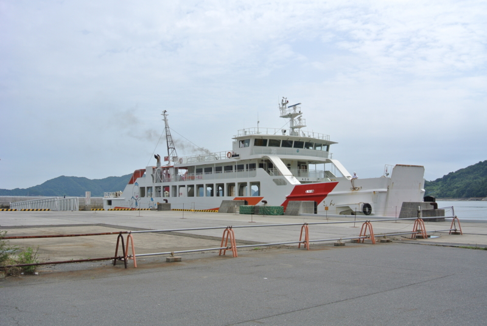
8月17日、お盆休みの最終日。艦これ＆プログラミングばかりで外に出てなかったので、おでかけすることにした。目的地は……周防大島と呉とで悩んだけれど、お天気がイマイチだったので呉に行くのはもったいないかな（ちょっと船賃が高い）と思い、周防大島を選んだ。
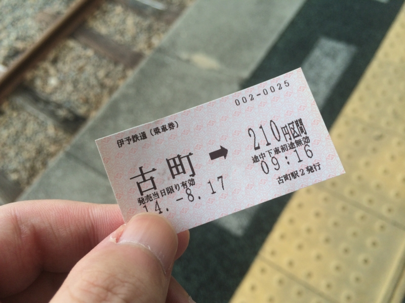
――電車に乗って、三津港まで。
三津～伊保田（周防大島）は海上だけど、これでも立派な国道437号なのだそうだ。港に着いたのが出航ギリギリで、クルマを腹いっぱい飲み込んだ船に飛び込むようにして乗った。海の国道って、生まれて初めて通るかもしれない。
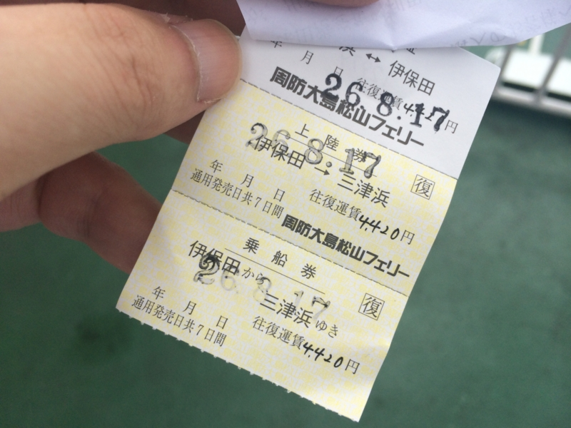
運賃は往復4,420円也。高いような、安いような。ちょっと注意しなくちゃいけないのは、伊保田港に寄る船は便数が限られているということ（半分ぐらい、ほかは山口県の柳井港へ直行）。
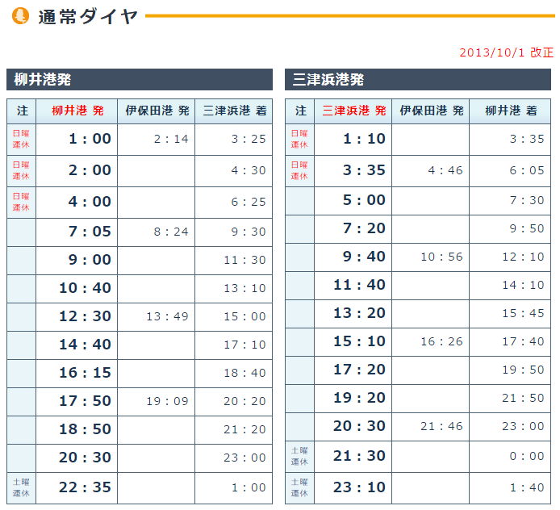
帰りの時間をちゃんと確認しておかないと、島に置いてけぼりにされてしまう（通常ダイヤ−運航ダイヤ（時刻表） | 防予フェリー）。
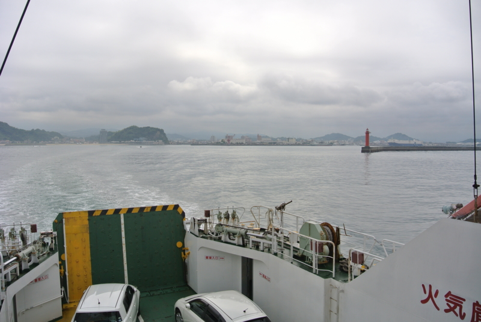
いざ出航。船室は冷房が効いていて涼しかったが、小さい子供たちが多く、のんびりすることはできなさそう。3階に上がり、潮風を楽しむことにする。
雲は若干重たそうだが、薄く日が透けて通り、雨の心配はなさそうだ。蒸し暑い。けれど、輿居島を右手にぐるっと迂回するように舵を切り、船が真っ直ぐに進みだすと、風が出てきた。少し肌寒いくらい。
この船の名前は「しらきさん」といい、総トン数は441トンとの由。スマートフォンの GPS で速度を測ると、時速28.3km ほど出ているという。これは約15ノットに相当する。
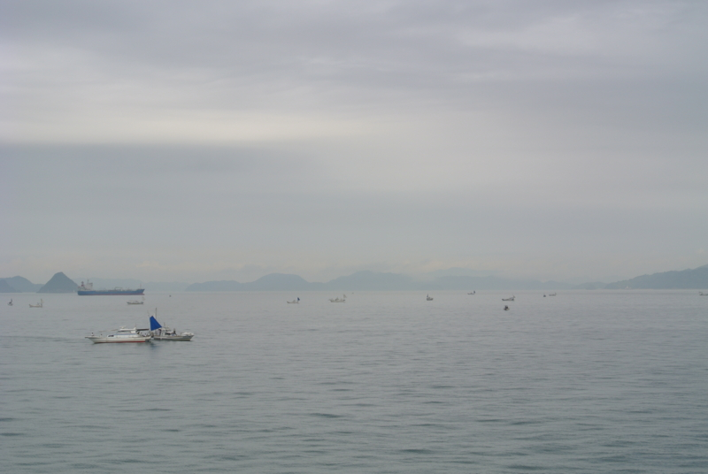
フェリーやタンカーがゆっくり進む周りを、漁船が漂ったり、高速で走り回ったりしている。大きな船は右側通行らしいが、小さな船はそんなことお構いなしらしい。なかには並走したり、進路を横切ったりするものもある。
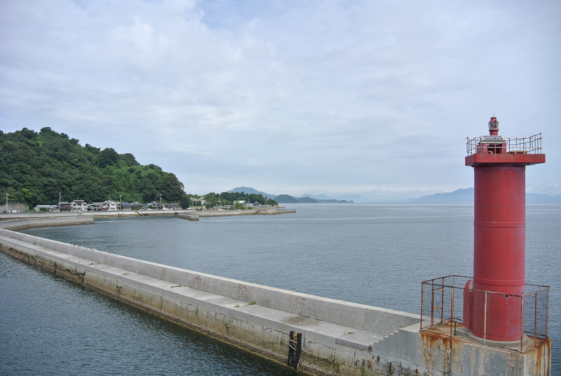
一時間ほどで、船は伊保田の港に着いた。遠くに何か大きな飛行機のような物体が見える。あっちが今回の旅の目的である「陸奥記念館」のあるところらしい。歩いてもたいした距離ではなさそうだ。

港から見えたのは、「PS-1」という海上自衛隊の飛行艇らしい。
日本軍は第二次大戦期に「二式大艇」という傑作機を生み出したが、その後、陸上機の信頼性が向上し、ヘリコプターが発達すると、水上へ（緊急）着陸できるという飛行艇の利点は顧みられなくなっていく。しかし日本では、小笠原諸島など、飛行場の設備がなく、かといってヘリコプターでは足の届かない遠島への緊急輸送手段としていまだに活躍しているのだという。とはいえ、そのうちオスプレイなどに取って代わられるのかもしれないが……。
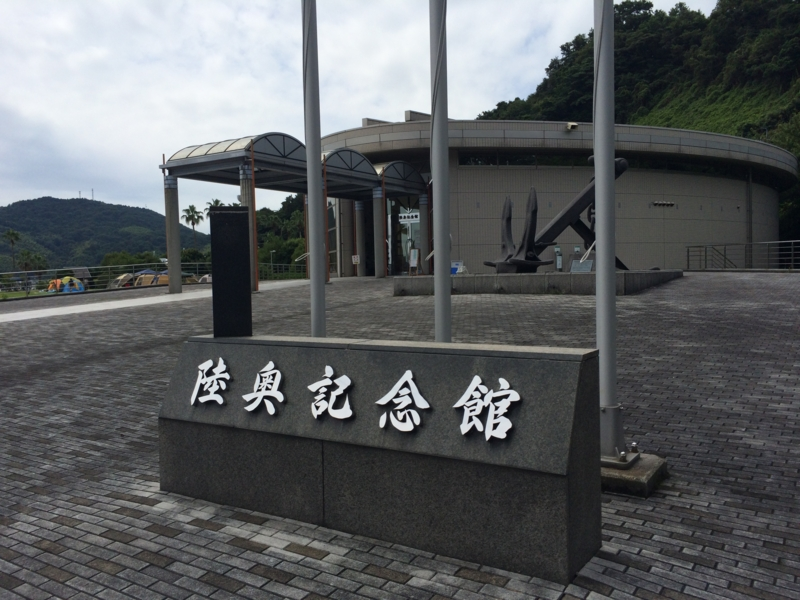
海水浴場や小さな水族館、キャンプ場などが整備された公園の一角に、「陸奥記念」はある。
「陸奥」というのは旧海軍が誇る、当時最強の戦艦の一つだった。今からすると旧海軍を代表する軍艦と言えば「大和」であり、「武蔵」であったが（もしかしたら「赤城」かもしれない）、この二艦は秘密裏に建造されていたこともあり、当時の国民からすると戦艦「長門」と、その姉妹艦であるこの「陸奥」こそが帝国海軍の象徴だった。
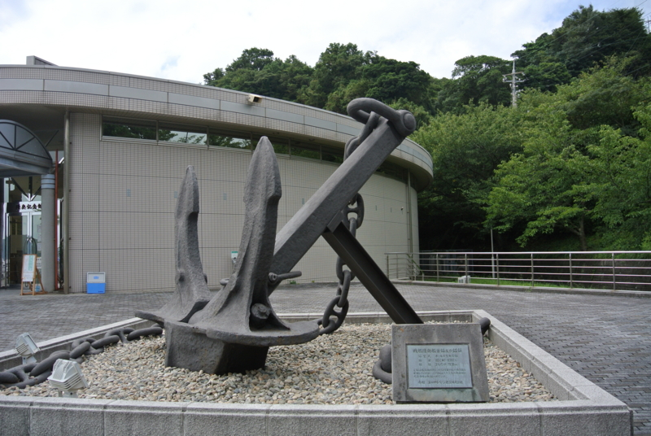
その威容を偲ばせる、ドデカい碇がまず僕を迎えてくれる。これは「陸奥」の両舷に一つずつ備えられていたが、これは右側のものだそうだ。
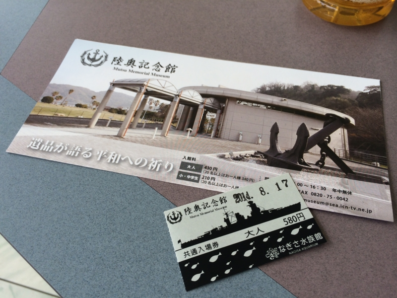
クーラーの効いた涼しい館内で、入場券を購入。大人430円、小・中学生は210円。隣の水族館との共通入場券は580円だが、おっさんの一人旅であれば陸奥記念館の方だけを買うことをお勧めする。こどもがいれば水族館も楽しめたろうが……。
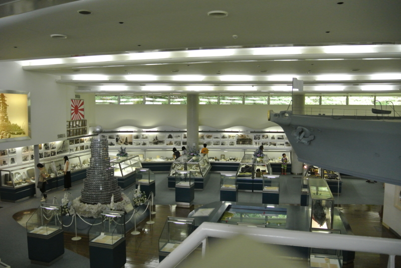
展示の様子。それほど大きくはないが、展示は充実しており、自分は優に1時間は楽しめた。滞在時間は1時間半程度だっただろうか。
しかし、この「陸奥」という艦はなんなんだろう。「陸奥」は生まれからして、あまり恵まれていなかった。
「陸奥」が誕生するころ、世界は軍縮に向けて動き出していた。「長門」に続き「陸奥」の建造が進められていた1921年（大正10年）、ワシントン海軍軍縮条約が締結に向けて審議されていた。条約には「未完成艦は廃艦とする」との条項があり、そのリストの中に「陸奥」も含まれていた。しかし、日本は「陸奥」は完成していると主張、突貫工事で就役させてしまった。
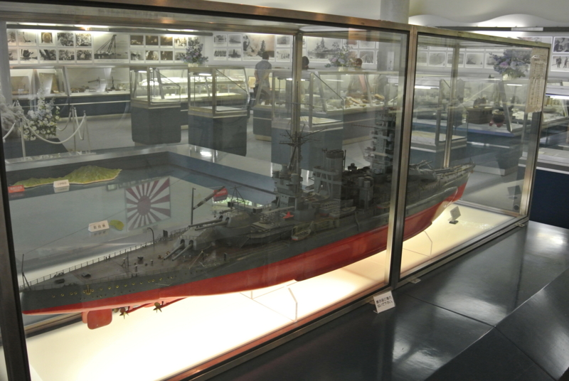
当時、世界最強の40cm主砲を備えた艦は、日本の「長門」とアメリカのコロラド級2番艦「メリーランド」のみ。そこに「陸奥」が加われば、日本が優位になる。それはアメリカ、イギリスにとって認めがたいことだった。
結局、交渉の結果日本は「陸奥」の保有を認められたが、アメリカには廃棄が決まっていたコロラド級2隻の建造続行が、イギリスはは2隻の新造が同時に認められることになる。日本海軍が「陸奥」を諦めていれば戦力は同等のままであったのに、これではかえってアメリカとイギリスの方が優位になってしまう。これではむしろ生まれてこなかった方がマシだったのではないか。
しかし、それだけ「陸奥」に対する期待が大きかったということでもあるのだろう。結局、40cm主砲を備えた戦艦は世界で7隻――長門型1番艦「長門」、同2番艦「陸奥」、コロラド級戦艦1番艦「コロラド」、同2番艦「メリーランド」、同3番艦「ウエストバージニア」、ネルソン級戦艦1番艦「ネルソン」 同2番艦「ロドニー」――ということになり、「長門」「陸奥」はその一角として重きをなした。「長門」「陸奥」さえいれば英米は攻めてこない、と真剣に信じていた人もいたという。
しかし結局、日本は太平洋戦争に追い込まれることになる。“世界のビッグセブン”である「陸奥」は、「長門」とともに温存され、出撃の機会はあっても、鈍足故に会敵することはなかった。快速の重巡洋艦が次々と戦果を挙げるのとは対照的と言えるだろう。
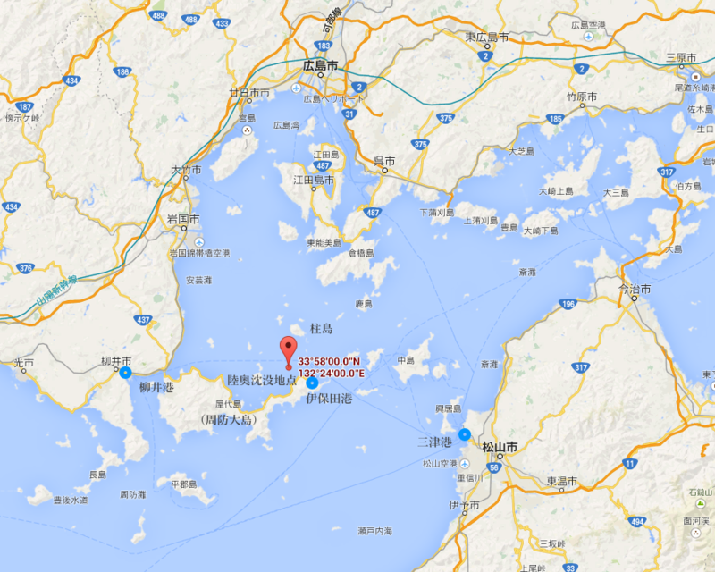
そして1943年（昭和18年）6月8日、広島湾沖柱島泊地に停泊中、「陸奥」は謎の爆沈を遂げる*1。自慢の40㎝主砲が敵に向かって放たれたことは一度もなかった。
「陸奥」の爆沈は海軍によって徹底的に秘匿されたため、明るみになったのは戦後になってからだった。乗員1,474人のうち助かったのは353人で、ほとんどが溺死ではなく爆死だったという。
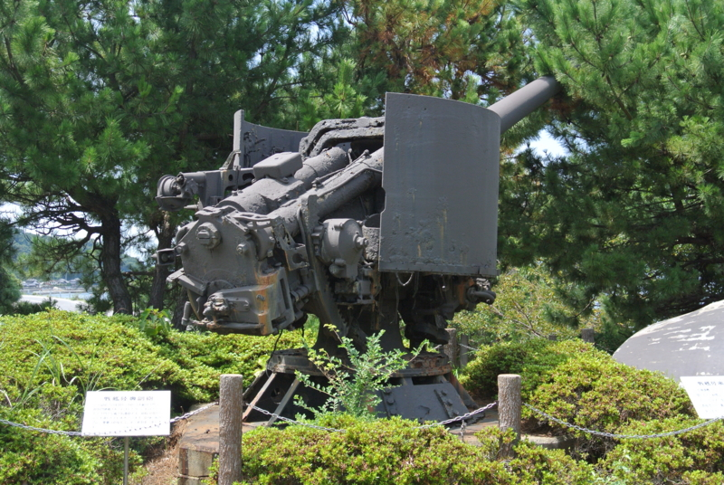
「陸奥記念」に隣接する屋外展示場には、沈没した「陸奥」から引き揚げられた副砲やスクリューが置いてある。
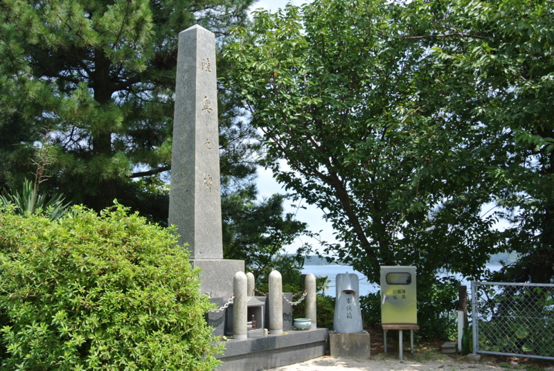
その奥まったところに、「陸奥之碑」がそびえたっていた。
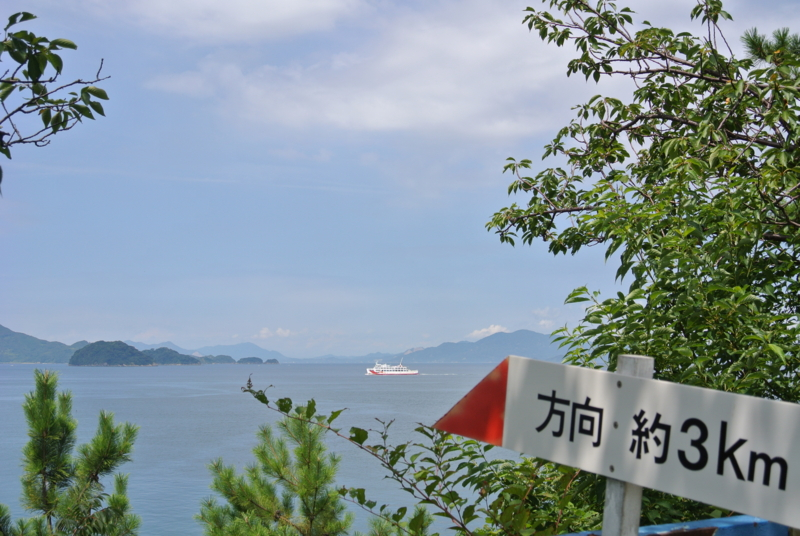
「陸奥」の沈んだ海も見える。フェリーが一隻、のろのろと進んでいる。あれが柳井港で折り返してくるのを捕まえないと、夜の7時までこの島を出られない。もう少しいたい気もしたが、伊保田港にはあてにしていた飯屋もなく……朝から何も食べていなかった僕は、すきっ腹を抱えて港の方へ歩き出した。
*1:そのとき「陸奥」のそばにいたのがこれまた不幸さではヒケをとらない戦艦「扶桑」だったというのがアレ。